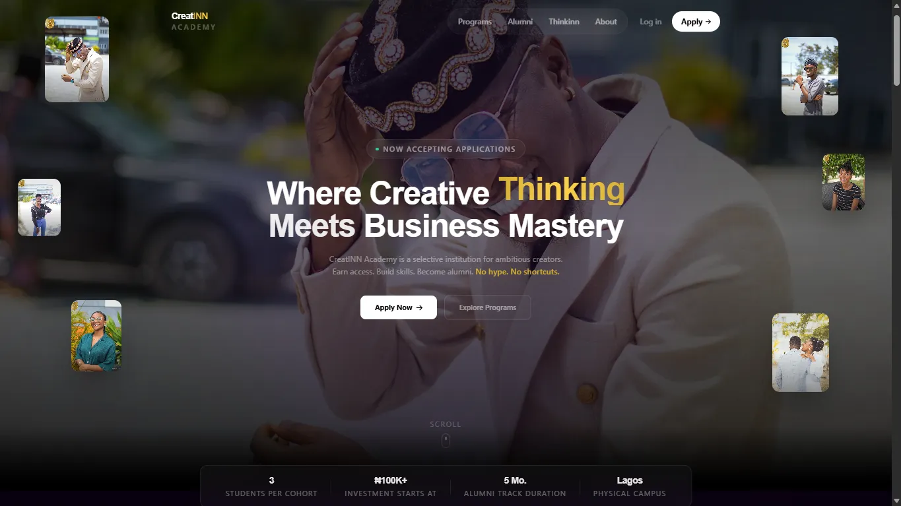
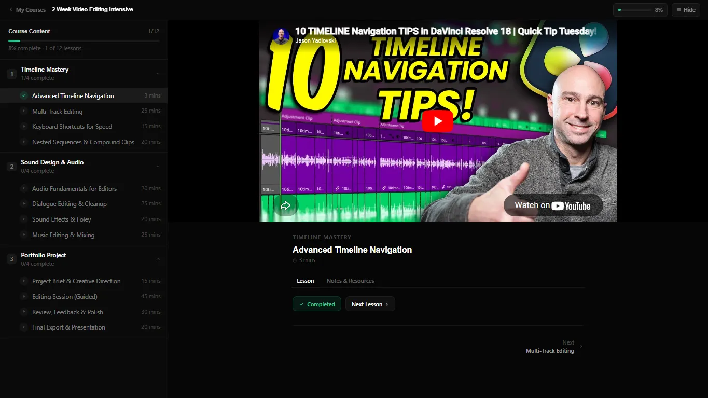
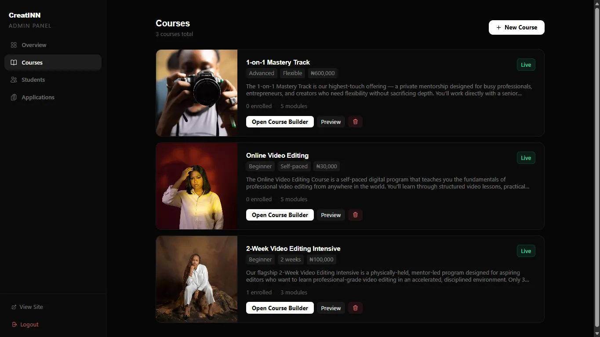
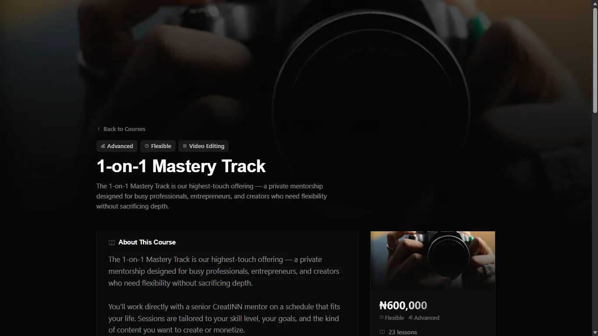

CreatINN Academy
The academy arm of Creatinn—a premium learning management system for a creative academy in Lagos, with student portal, admin workflows, course pages, application handling and alumni tracking, built to make the brand feel credible.




Context
Creatinn runs a content studio and an academy under one brand. For the learning side, the academy needed a digital experience premium enough to earn trust quickly, while still handling the practical work of applications, student progress, course management and alumni tracking.
What I built
An LMS with a student-facing portal, admin workflows, structured course pages and support for application flows. Next.js and TypeScript gave the app strong structure, Prisma kept the data layer clean, and NextAuth handled the authenticated journeys.
Why this approach
The goal wasn’t just to make a dashboard—it was to make the academy look and feel credible. Clarity, hierarchy and polished interactions earn that trust faster than a generic template.
Role & scope
Product structure, LMS flows and the presentation layer for both students and admins.
Result
A platform that supports the academy’s full lifecycle—enrollment through admin management—with a visual tone that reads premium instead of generic.